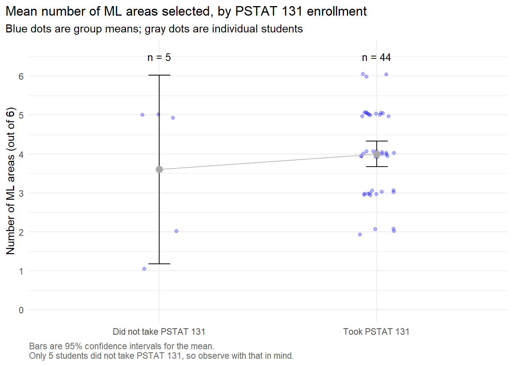
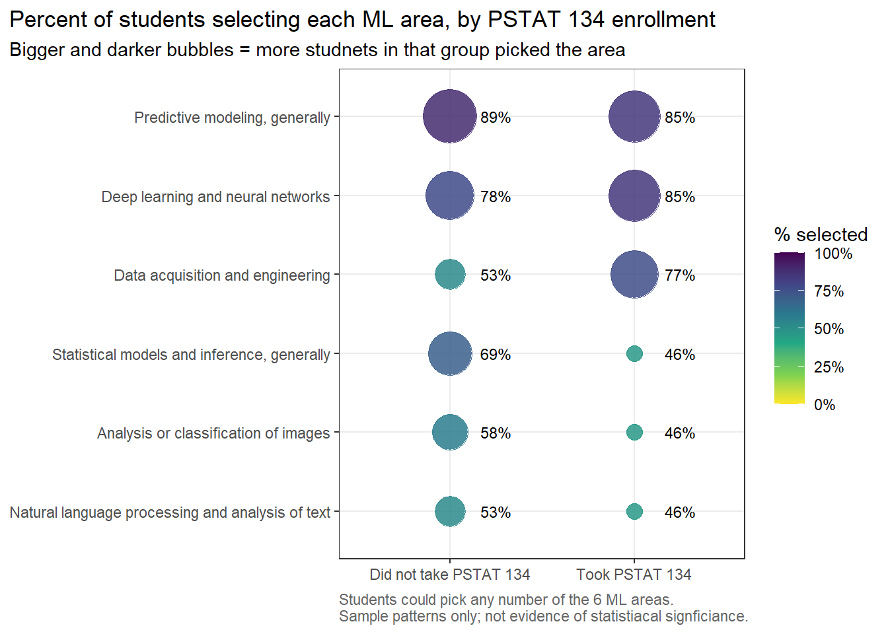
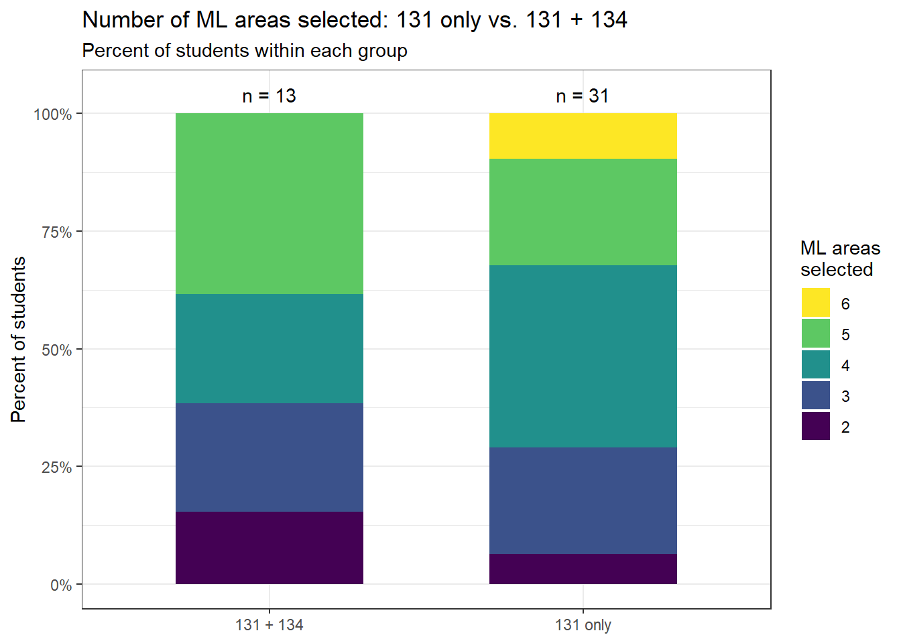
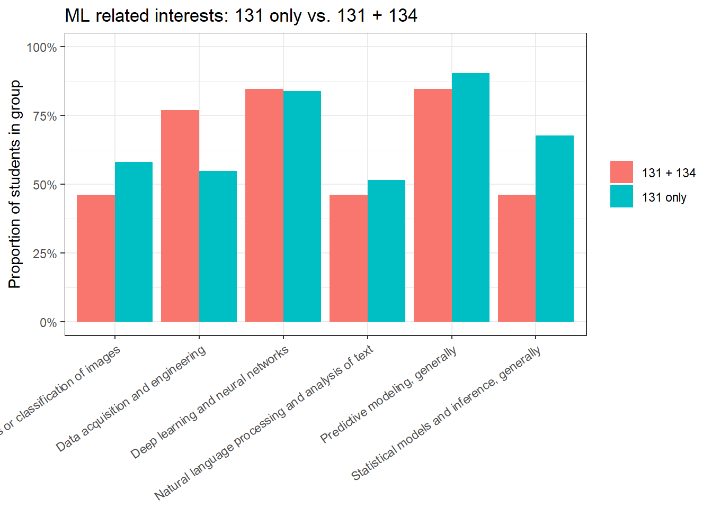
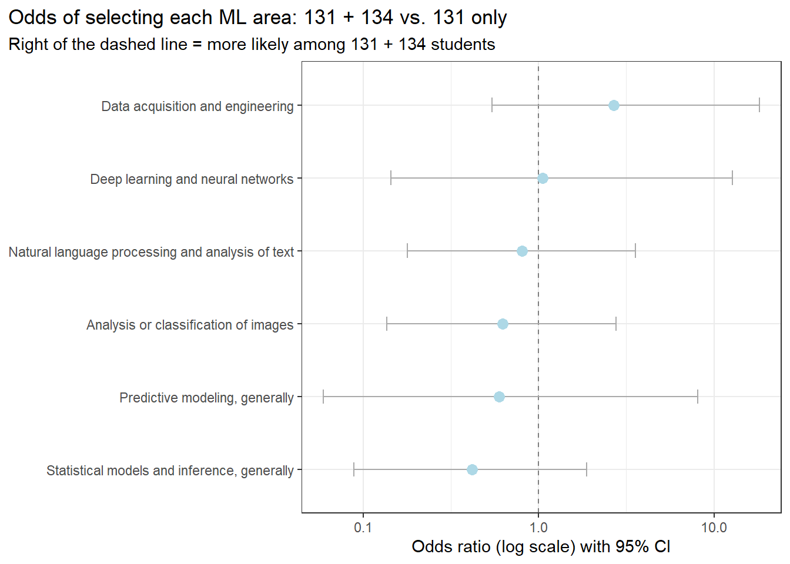

ml_areas <- c(
"Analysis or classification of images",
"Deep learning and neural networks",
"Data acquisition and engineering",
"Natural language processing and analysis of text",
"Predictive modeling, generally",
"Statistical models and inference, generally"
)Module 0 Project: Analysis of Class Surveys
Executive summary
[Write one short paragraph covering the purpose of the survey analysis, the two research questions, the main finding for each question, and the overall takeaway. Write this section last.]
Data description
Survey and respondents
[Explain how the survey was collected, who responded, and what information it contains. State the overall sample size.]
Our second question surrounds the association between taking certain PSTAT courses and having specific areas of interest. Specifically, we want to see if taking PSTAT 131 and/or PSTAT 134 has any correlation in machine learning domain interests. We chose the 131/134 courses because its course description fits the topic of machine learning and its techniques pretty well. It is a course that is well known in the PSTAT department, and with the ongoing advancements in artificial intelligence and machine learning, we only feel that the latter is worth exploring through our survey data.
We tackled this question in two parts: 1) isolating PSTAT 131 and PSTAT 134 separately against students who have not taken the class, respectively, and 2) comparing taking PSTAT 134 vs only taking PSTAT 131. With that said, we used the 49 students who consented to having both datasets shared, as we needed to join by response_id.
Variables and measurements
[Define the variables used for each question: Q1 uses upper-division PSTAT course count and statistics comfort; Q2 uses PSTAT 131/134 course groups and the measure of ML interest. Explain how course counts, ratings, and interest scores were defined.]
For Question 2, we only needed to use courses and areas for our analysis.
courses was straightforward as we needed to filter the students whether or not they took such classes (i.e PSTAT 131 and PSTAT 134). We also checked that everyone who took PSTAT 134 also took PSTAT 131 as that is a prerequisite. This assumption was validated.
Machine Learning Interests:
“Analysis or classification of images”
“Deep learning and neural networks”,
“Data acquisition and engineering”,
“Natural language processing and analysis of text”,
“Predictive modeling, generally”
“Statistical models and inference, generally”
For ML interests, we chose these six areas because they were the most closely related to machine learning. Students were able to select from eleven areas of interest, and most of them can be argued to connect to ML in some way. However, this selection focuses primarily on areas involving building, training, or applying predictive models, or preparing the data those models rely on. We recognize that this choice of selection is somewhat subjective and that a different selection could lead to slightly different results.
Analysis samples and data preparation
[State the sample size used for each question. For Q2, also state the size of each comparison group. Explain exclusions, missing-data handling, and relevant recoding. Clarify that “131 only” means taking 131 without taking 134.]
We have already joined the two datasets (background-clean.csv and interest-clean.csv) by response_id. We can see that there are 49 respondents who consented to sharing both responses. While there are 15 columns, we will mainly be using courses and areas.
problem2 <- read_csv(here::here("data", "processed", "q2", "problem2.csv"))Out of the 49 students, 44 students took PSTAT 131 and only 13 of those students took PSTAT 134.
Questions of interest
- Is the number of upper-division PSTAT courses taken associated with students’ self-reported statistics comfort?
- Do students who have taken both PSTAT 131 and PSTAT 134 report greater interest in machine-learning-related fields than students who have taken PSTAT 131 only?
Findings
Q1: PSTAT coursework and statistics comfort
Descriptive patterns
[Present the main distributions and patterns. Include one or two descriptive figures or tables. Explain what readers should notice in each.]
Statistical analysis and results
[Briefly explain the method and why it addresses Q1. Report the key estimates, uncertainty, and statistical results. Include a main model figure or results table.]
Interpretation
[Answer Q1 directly. Explain the practical meaning of the results. Discuss limitations specific to this analysis.]
Q2: PSTAT 131/134 coursework and ML interest
Descriptive comparison
[Compare the two groups’ ML interest scores. Include a summary table or distribution plot. Show individual interest areas if they help answer the question.]
To begin, we will explore students who have taken PSTAT 131 and students who have not taken PSTAT 131.
ml_data_131 <- problem2 |>
mutate(course_group = if_else(str_detect(courses, "\\bPSTAT 131\\b"),
"Took PSTAT 131", "Did not take PSTAT 131")) |>
crossing(area = ml_areas) |>
mutate(selected = str_detect(areas, fixed(area))) |>
group_by(response_id, course_group) |>
summarise(n_ml_areas = sum(selected), .groups = "drop")
ml_summary <- ml_data_131 %>%
group_by(course_group) %>%
summarise(
n = n(),
mean_ml_areas = mean(n_ml_areas),
median_ml_areas = median(n_ml_areas),
.groups = "drop"
)
save_table(ml_summary, "ml_interest_summary_by_pstat131.csv")
kable(
ml_summary,
digits = 3,
caption = "ML-Related Interests by PSTAT 131 Enrollment"
)| course_group | n | mean_ml_areas | median_ml_areas |
|---|---|---|---|
| Did not take PSTAT 131 | 5 | 3.6 | 5 |
| Took PSTAT 131 | 44 | 4.0 | 4 |
Here we have summary statistics for students who have taken PSTAT 131 vs students who have not taken PSTAT 131. The mean and median number of machine learning areas are shown. The mean is larger for students who took PSTAT 131, while the median is larger for students who have not taken PSTAT 131.
mean_131 <- ml_data_131 |>
group_by(course_group) |>
summarise(n = n(),
mean_ml = mean(n_ml_areas),
se = sd(n_ml_areas) / sqrt(n),
lower = mean_ml - qt(0.975, n - 1) * se,
upper = mean_ml + qt(0.975, n - 1) * se,
.groups = 'drop')
ggplot(mean_131, aes(x = course_group, y = mean_ml)) +
geom_jitter(data = ml_data_131, aes(y = n_ml_areas),
width = 0.08, height = 0.08, alpha = 0.3, color = 'blue') +
geom_line(aes(group = 1), color = 'gray') +
geom_errorbar(aes(ymin = lower, ymax = upper), width = 0.1, color = 'black') +
geom_point(size = 3, color = 'darkgray') +
geom_text(aes(y = 6.5, label = paste0('n = ', n)), size = 3.5) +
scale_y_continuous(limits = c(0, 6.6), breaks = 0:6) +
labs(title = 'Mean number of ML areas selected, by PSTAT 131 enrollment',
subtitle = 'Blue dots are group means; gray dots are individual students',
caption = 'Bars are 95% confidence intervals for the mean.\nOnly 5 students did not take PSTAT 131, so observe with that in mind.',
x = NULL, y = 'Number of ML areas (out of 6)') +
theme_minimal() +
theme(plot.title.position = 'plot',
plot.caption = element_text(hjust = 0, color = 'grey40'))
The graph suggests that students who took PSTAT 131 selected slightly more machine-learning-related interest areas on average than students who did not take PSTAT 131. However, the difference appears small, and the non-PSTAT 131 group is very small.
PSTAT 134 (Statistical Data Science) is a natural next step to look at. Since PSTAT 131 is a prerequisite, taking 134 reflects a student choosing to continue further into data science and machine learning, which might show up as a stronger or different ML interests. As done before, we can start by checking how many students fall into each group.
q134 <- problem2 |>
mutate(group_134 = if_else(str_detect(courses, fixed('PSTAT 134')),
'Took PSTAT 134', 'Did not take PSTAT 134'))
q134 |>
count(group_134, name = 'n_students') |>
mutate(proportion = n_students / sum(n_students)) |>
kable(digits = 3, caption = 'Students by PSTAT 134 enrollment')| group_134 | n_students | proportion |
|---|---|---|
| Did not take PSTAT 134 | 36 | 0.735 |
| Took PSTAT 134 | 13 | 0.265 |
area_long_134 <- q134 |>
crossing(area = ml_areas) |>
mutate(selected = str_detect(areas, fixed(area)))PSTAT 134 is not a commonly taken course among the students in our sample. Only 13 of the 49 respondents (26.5%) reported taking PSTAT 134, while 36 (73.5%) had not. This is a big contrast with PSTAT 131, which 44 of the 49 students (89.8%) had taken. Since PSTAT 131 is a prerequisite for PSTAT 134, most students have completed the introductory machine learning course but relatively few continued on to 134, leading to a unbalanced comparison.
ml_data_134 <- area_long_134 |>
group_by(response_id, group_134) |>
summarise(n_ml_areas = sum(selected), .groups = 'drop')
ml_data_134 |>
group_by(group_134) |>
summarise(n = n(),
mean_ml_areas = mean(n_ml_areas),
median_ml_areas = median(n_ml_areas),
min = min(n_ml_areas),
max = max(n_ml_areas)) |>
kable(digits = 2, caption = 'Number of ML-related areas selected, by PSTAT 134 enrollment')| group_134 | n | mean_ml_areas | median_ml_areas | min | max |
|---|---|---|---|---|---|
| Did not take PSTAT 134 | 36 | 4.00 | 4 | 1 | 6 |
| Took PSTAT 134 | 13 | 3.85 | 4 | 2 | 5 |
Students who did not take PSTAT 134 selected slightly more ML related areas on average (4.00) than those who took PSTAT 134 (3.85), although both groups share the same median of 4. Something to note is that students who did not take PSTAT 134 also had a wider range (1 to 6 areas) than those who took it to (2 to 5 areas), likely because that group is nearly three times larger. In all, we can see that the two groups show very similar levels of ML interest, suggesting that taking PSTAT 134 is not really associated with selecting more ML related areas.
area_props_134 <- area_long_134 |>
group_by(group_134, area) |>
summarise(n_selected = sum(selected),
n_students = n(),
proportion = n_selected / n_students,
.groups = 'drop')
ggplot(area_props_134,
aes(x = group_134, y = reorder(area, proportion),
size = proportion, color = proportion)) +
geom_point(alpha = 0.85) +
geom_text(aes(label = scales::percent(proportion, accuracy = 1)),
size = 3.2, color = 'black', nudge_x = 0.25) +
scale_size(range = c(4,14), guide = 'none') +
scale_color_viridis_c(direction = -1, limits = c(0,1),
labels = scales::percent, name = '% selected') +
labs(title = 'Percent of students selecting each ML area, by PSTAT 134 enrollment',
subtitle = 'Bigger and darker bubbles = more studnets in that group picked the area',
caption = 'Students could pick any number of the 6 ML areas. \nSample patterns only; not evidence of statistiacal signficiance.',
x = NULL, y = NULL) +
theme_bw() +
theme(plot.title.position = 'plot',
plot.caption = element_text(hjust = 0, color = 'grey40'))
When we broke the ML interest down by area, some differences show up that the overall totals didn’t catch initially. Students who took PSTAT 134 were a lot more into data acquisition and engineering (76.9% vs. 52.8%) and a little into deep learning (84.6% vs. 77.8%). On the other other hand, they picked statistical inference (46.2% vs. 69.4%). image analysis (46.2 % vs. 58.3%), and NLP (46.2% vs. 52.8%) less often. Predictive modeling was the top pick for both groups, with around 88.9% of non-134 students and 84/6% of 134 students choosing it. From this we can say that PSTAT 134 students might lean more toward data engineering and away from traditional stats, but since there are only 13 of them, these differences could just be a random chance.
Now we will go back to our main question: among students who have taken PSTAT 131, do those who also took PSTAT 134 report more interest in machine learning? One issue with the PSTAT 134 vs. non-134 comparison is that the “did not take PSTAT 134” group also included the 5 students who never took PSTAT 131. To get a cleaner comparison, we can now look only at students who took PSTAT 131 and split them into those who stopped at 131 and those who went on to take 134 as well. This way, everyone has the same intro ML background, and we can see whether taking 134 on top of 131 makes a difference.
area_131 <- area_long_134 |>
filter(str_detect(courses, fixed('PSTAT 131'))) |>
mutate(cohort = if_else(group_134 == 'Took PSTAT 134', '131 + 134', '131 only'))
ml_131 <- area_131 |>
group_by(response_id, cohort) |>
summarise(n_ml_areas = sum(selected), .groups = 'drop')
comparison_summary <- ml_131 |>
group_by(cohort) |>
summarise(
n = n(),
mean_ml_areas = mean(n_ml_areas),
median_ml_areas = median(n_ml_areas),
.groups = "drop"
)
kable(
comparison_summary,
digits = 3,
caption = "ML Interests: PSTAT 131 Only vs Both Courses"
)| cohort | n | mean_ml_areas | median_ml_areas |
|---|---|---|---|
| 131 + 134 | 13 | 3.846 | 4 |
| 131 only | 31 | 4.065 | 4 |
Student who took only PSTAT 131 picked slightly more ML areas on average (4.06 vs. 3.85), and both groups had a median of 4. These numbers are almost the same as in the PSTAT 134 vs. non-134 comparison, so removing the 5 students who never took 131 did not change much.
cohort_distribution <- ml_131 |>
count(cohort, n_ml_areas) |>
group_by(cohort) |>
mutate(pct = n / sum(n)) |>
ungroup() |>
mutate(n_ml_areas = factor(n_ml_areas, levels = 6:1)) |>
ggplot(aes(x = cohort, y = pct, fill = n_ml_areas)) +
geom_col(width = 0.6) +
geom_text(data = ml_131 |>
count(cohort),
aes(x = cohort, y = 1.04, label = paste0('n = ', n)),
inherit.aes = FALSE) +
scale_y_continuous(labels = scales::percent) +
scale_fill_viridis_d(direction = -1) +
labs(title = 'Number of ML areas selected: 131 only vs. 131 + 134',
subtitle = 'Percent of students within each group',
x = NULL, y = 'Percent of students', fill = 'ML areas\nselected') +
theme_bw()
cohort_distribution
The distributions for both groups look very similar, with most students in each group selecting between 3 and 5 ML areas. The main difference is at the top of the scale, where some students who only took PSTAT 131 selected all 6 areas, while none of the students who took both courses did.
comparison_proportions <- area_131 |>
group_by(cohort, area) |>
summarise(n_selected = sum(selected),
n_students = n(),
proportion = n_selected / n_students,
.groups = 'drop')
save_table(comparison_proportions, 'ml_area_proportions_131_vs_131_134.csv')
comparison_plot <- ggplot(comparison_proportions,
aes(x = area, y = proportion, fill = cohort)) +
geom_col(position = 'dodge') +
scale_y_continuous(labels = scales::percent, limits = c(0,1)) +
labs(title = 'ML related interests: 131 only vs. 131 + 134',
x = NULL, y = 'Proportion of students in group', fill = NULL) +
theme_bw() +
theme(axis.text.x = element_text(angle = 35, hjust = 1))
comparison_plot
ggsave(
file.path(fig_dir, "fig_4_ml_area_proportions_131_vs_131_134.png"),
plot = comparison_plot,
width = 11,
height = 7,
dpi = 300
)This follows from the same pattern as the PSTAT 134 vs. non-134 comparison. Students who took both courses leaned more toward data acquistiion and engineering (77% vs. 55%) and less toward statistical inference (46% vs. 68%). The other areas were fairly similar between the two groups.
Statistical analysis and results
[Briefly explain the comparison method. Report the key estimates and statistical results. Distinguish the overall interest-score comparison from comparisons of individual interest areas.]
wilcox_result <- wilcox.test(
n_ml_areas ~ course_group,
data = ml_data_131,
exact = FALSE
)
wilcox_result
Wilcoxon rank sum test with continuity correction
data: n_ml_areas by course_group
W = 107, p-value = 0.9319
alternative hypothesis: true location shift is not equal to 0We conducted a nonparametric test (particularly the Wilcoxon rank sum test) since the group of students who haven’t taken PSTAT 131 is fairly small, at 5 students. This test is used to determine whether two independent samples come from populations with the same distribution or median. Since the p-value is high enough, we fail to reject the null hypothesis and conclude that there is no difference in the number of machine learning interests between students who have or have not taken PSTAT 131.
# Fisher's exact test
area_long_134 |>
group_by(area) |>
summarise(took_134 = mean(selected[group_134 == 'Took PSTAT 134']),
not_134 = mean(selected[group_134 == 'Did not take PSTAT 134']),
p_value = fisher.test(table(group_134, selected))$p.value) |>
kable(digits = 3, caption = "Fisher's exact test by ML area")| area | took_134 | not_134 | p_value |
|---|---|---|---|
| Analysis or classification of images | 0.462 | 0.583 | 0.525 |
| Data acquisition and engineering | 0.769 | 0.528 | 0.191 |
| Deep learning and neural networks | 0.846 | 0.778 | 0.709 |
| Natural language processing and analysis of text | 0.462 | 0.528 | 0.754 |
| Predictive modeling, generally | 0.846 | 0.889 | 0.650 |
| Statistical models and inference, generally | 0.462 | 0.694 | 0.184 |
# Wiclxo rank sum test
wilcox.test(n_ml_areas ~ group_134,
data = ml_data_134,
exact = FALSE)
Wilcoxon rank sum test with continuity correction
data: n_ml_areas by group_134
W = 249.5, p-value = 0.7251
alternative hypothesis: true location shift is not equal to 0From the Fisher’s test, it seems like none of the six ML areas showed a statistically significant difference between the two groups, since every p value was well above 0.05. Even with the biggest gaps, like data engineering (p = 0.191) and statistical inference (p = 0.184), were not strong enough to rule out random chance. Additionally, the Wilcox rank sum test found no significant difference in the total of number of ML areas picked between the two groups (W = 249.5, p = 0.725). Meaning that students who took PSTAT 134 and those who didn’t showed pretty much the same overall level of interest in machine learning.
Finally, we can check whether any of these differences are statistically significant. For each ML area, we use Fisher’s exact test, since it works well with small groups like our 13 students who took both courses. The test also gives an odds ratio, which tells us how much more (or less) likely 131 + 134 students were to select each area compared to 131 only students.
fisher_131 <- area_131 |>
group_by(area) |>
summarise(test = list(fisher.test(table(
factor(cohort, levels = c('131 only', '131 + 134')),
selected))), .groups = 'drop') |>
mutate(p_value = map_dbl(test, ~ .x$p.value),
odds_ratio = map_dbl(test, ~ .x$estimate),
lower = map_dbl(test, ~ .x$conf.int[1]),
upper = map_dbl(test, ~ .x$conf.int[2])) |>
select(-test)
save_table(fisher_131, 'fisher_tests_131_vs_131_134.csv')
kable(fisher_131,
digits = 3,
captions = "Fisher's exact test by ML area: 131 only vs. 131 + 134")| area | p_value | odds_ratio | lower | upper |
|---|---|---|---|---|
| Analysis or classification of images | 0.522 | 0.626 | 0.137 | 2.764 |
| Data acquisition and engineering | 0.198 | 2.685 | 0.543 | 18.148 |
| Deep learning and neural networks | 1.000 | 1.056 | 0.144 | 12.700 |
| Natural language processing and analysis of text | 1.000 | 0.808 | 0.178 | 3.558 |
| Predictive modeling, generally | 0.623 | 0.597 | 0.059 | 8.059 |
| Statistical models and inference, generally | 0.309 | 0.417 | 0.088 | 1.878 |
For every ML area, the p-value is well above 0.05, so none of the differences between the two groups are statistically significant. The largest gap was in the data acquisition and engineering, where students who took both courses had about 2.7 times the odds of selecting it compared to 131 only students (p = 0.198). In the other direction, they had the lower odds of selecting statistical models and inference (odds ratio = 0.417, p = 0.309). Deep learning and NLP were almost identical between the groups, with odds ratios close to 1 and p-values of 1.. Every 95% confidence interval also includes 1, and more are very wide (data engineering was ranging from 0.54 to 18.15). What this means is that our data is consistent with taking PSTAT 134 having no effect at all, and the small 131 + 134 group having 13 students makes it hard to find any real difference.
ggplot(fisher_131, aes(x = odds_ratio, y = reorder(area, odds_ratio))) +
geom_vline(xintercept = 1, linetype = 'dashed', color = 'grey50') +
geom_errorbarh(aes(xmin = lower, xmax = upper), height = 0.2, color = 'darkgrey') +
geom_point(size = 3, color = 'lightblue') +
scale_x_log10() +
labs(title = 'Odds of selecting each ML area: 131 + 134 vs. 131 only',
subtitle = 'Right of the dashed line = more likely among 131 + 134 students',
x = 'Odds ratio (log scale) with 95% CI', y = NULL) +
theme_bw() +
theme(plot.title.position = 'plot')
This odds ratio plot shows the same results visually. The points for data engineering and deep learning fall to the right of the dashed line, while the other four areas fall to the left. However, every confidence interval crosses the dashed line at 1, so none of these differences can be separated from random chance.
Next, we compare the total number of ML areas each student selected. To achieve that, we can use a one sided Wilcoxon rank-sum test because the totals are small counts with only 13 students in one group, and our question asks whether 131 + 134 students report greater ML interest.
test_result <- wilcox.test(
ml_131$n_ml_areas[ml_131$cohort == '131 + 134'],
ml_131$n_ml_areas[ml_131$cohort == '131 only'],
alternative = 'greater',
exact = FALSE
)
test_result
Wilcoxon rank sum test with continuity correction
data: ml_131$n_ml_areas[ml_131$cohort == "131 + 134"] and ml_131$n_ml_areas[ml_131$cohort == "131 only"]
W = 186, p-value = 0.6654
alternative hypothesis: true location shift is greater than 0From this test it found no evidence that students who took both courses selected more ML areas than students who took only PSTAT 131 (W = 186, p = 0.665). In fact, their mean was slightly lower (3.85 vs. 4.06). Together with the Fishers tests, this suggests that among students who have already taken PSTAT 131, also taking PSTAT 134 is not associated with greater interest in machine learning.
Interpretation
[Answer Q2 directly. Explain the practical meaning of the results. Discuss limitations specific to this comparison.]
Since all of our significance tests, from comparing any pair from the three options (taken PSTAT 131, taken PSTAT 134, or neither), failed to reject any differences, there is no association with one’s interest in machine learning and the courses they have taken.
Taking PSTAT 131 does not appear to be associated with electing more ML-related areas. The biggest gap showed up “Deep learning and neural networks”, but the overall counts were similar and the Wilcoxon test found no significant difference. That said, this comparison is limited. With 44 of the 49 respondents having taken PSTAT 131, almost the whole class shares the same intro ML background, and the comparison group is only 5 students. This tells us that PSTAT 131 alone does not do much to separate students in our sample, so a more informative question is whether going beyond 131 makes a difference.
There a few things to consider when looking at these results. First, the groups are pretty unbalanced, with only 13 students who took PSTAT 134 compared to 36 who didn’t. That small group means one or two students can skew the percentage a lot, and our tests don’t have much power to pick up a real difference. Second, the “did not take PSTAT 134” group isn’t all the same, since it mixes 31 students who took PSTAT 131 with 5 who took neither course, so it isn’t a clean comparison. The survey also let students pick as many areas as they wanted, our six ML areas was more a judgment call, also the data is self reported interest rather than actual skill, and since students choose their own courses, we cant determine that PSTAT 134 caused any differences.
Some drawbacks about this research question is that the survey allowed the respondent as many choices they wanted for area interests. In other words, someone could have checked all the boxes and make the cohorts even harder to determine. Ideally, we would have each person only selected one topic they are most interested in.
Also, since there were multiple questions on the survey, with the interest question being near the end, many students may have felt fatigued and not thinking as deep for their true answers. Therefore, this survey may have not been a fair representation of students’ interests, or disinterest, in machine learning.
Conclusion
[Briefly bring together the answers to both questions. State the overall takeaway and shared limitations. Do not introduce new analyses or figures.]
Appendix
[Optional: include additional plots, detailed model output, or supporting analyses that would interrupt the main report.]
References
[Include any external sources cited in the report, if applicable.]